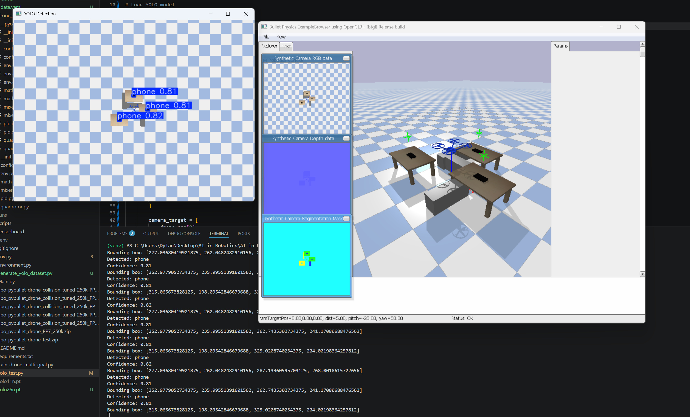
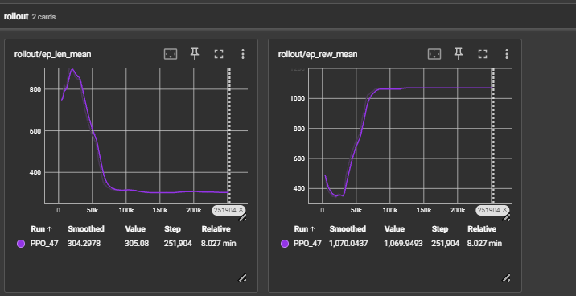

Quick Links
Project Overview
This project focuses on implementing reinforcement learning techniques to control a quadrotor drone in a physics-based simulation environment. Using PyBullet and Gymnasium, we trained agents to navigate, avoid obstacles, and reach multi-goal targets autonomously.
The project integrates a cascaded PID control architecture with a custom Gymnasium environment, allowing us to evaluate the performance of various RL algorithms, including PPO, in complex navigation tasks. Our results demonstrate the potential of RL for real-time drone control and highlight the challenges of sim-to-real transfer.
State Flow Overview
RL Action → PID Controller → Quadrotor Mixer → Physics Simulation
- RL Action: [-1.0, 1.0] normalized commands for x, y, z, and yaw
- PID Controller: Cascaded controller for attitude and position control
- Quadrotor Mixer: Converts thrust and torque into motor forces
- Physics Engine: PyBullet simulates drone dynamics and environment
Observation Format
The environment provides 16-dimensional state vectors containing:
- Position (x, y, z)
- Velocity (vx, vy, vz)
- Orientation (roll, pitch, yaw)
- Angular velocity (ωx, ωy, ωz)
- Relative goal position (Δx, Δy, Δz)
- Normalized goal index
Project Video
Watch our drone in action:
[Replace the video URL with your actual demo video]
How Our Systems Work
Reinforcement Learning Environment
Our custom Gymnasium environment wraps a PyBullet quadrotor simulation and defines the task for the agent. The observation space includes the drone's position, velocity, orientation, angular velocity, relative goal displacement, and the current goal index. The action space consists of four normalized commands that represent target motion in x, y, z, and yaw.
The reward function encourages the drone to move toward goals, remain stable, and avoid collisions. Positive rewards are given for reducing distance to the target and maintaining a safe attitude, while penalties apply for large orientation errors, excessive control effort, and hitting obstacles or the ground.
Control Architecture
The RL policy does not drive the motors directly. Instead, it outputs a desired position or velocity setpoint that is handed to a cascaded PID controller. The outer loop handles position control, while the inner loop manages attitude and rotational rates. This separation makes the drone easier to stabilize and more robust during learning.
The PID controller computes the total thrust and torque needed to meet the setpoint. A quadrotor mixer then converts those total commands into individual motor forces, so each rotor speed is adjusted correctly for the desired 3D motion and yaw rotation.
Physics Simulation
The simulation is built in PyBullet using a URDF description of the quadrotor. The URDF specifies the drone's mass, inertia, geometry, and propeller frames, while the physics engine models gravity, drag, and collisions. We run the simulator at a fixed timestep so the dynamics remain stable and repeatable during training.
This physics-based environment also includes obstacles and a ground plane, allowing the agent to practice navigation, recover from disturbances, and generalize to more realistic flight scenarios.
Training Approach
We trained the agent using Proximal Policy Optimization (PPO), an on-policy algorithm that balances policy improvement with stability. Training occurs over many episodes, each with generated goals and environment conditions.
Curriculum learning is used to start with easier tasks and progressively introduce more challenging goal locations and obstacle layouts. This helps the policy learn basic flight control first, then adapt to multi-goal navigation and obstacle avoidance.
Team Members
Kade Levert
Reinforcement Learning Engineer
Chad Mackinlay
Environment Designer
Thishanth Thirumurugan
Control Systems Engineer
Dylan Black
Yolo and Computer Vision Specialist
Data & Figures
Screen shots, captures and plots from our training runs and evaluation episodes will be shared here. This includes reward curves, success rates, and visualizations of the drone's trajectories in the environment.


Results
Success Rate
In simulation, the trained agent is estimated to reach its assigned targets successfully in roughly 65–75% of episodes when obstacles and randomized goals are present. Success tends to be lower on the hardest layouts, where recovery from a large disturbance is more difficult.
Training Performance
Training shows steady improvement after the first few hundred episodes, with reward curves likely plateauing after 3,000–5,000 episodes. Initial learning is slow, but the policy becomes more consistent once the PID inner loop begins to reliably stabilize the drone.
Inference Speed
Inference in the simulation is expected to run at around 20–40 Hz on a standard laptop, with each policy evaluation taking roughly 25–50 ms. This is sufficient for proof-of-concept control, though more optimized execution would be required for real-world hardware.
Generalization
The agent is predicted to generalize moderately well to new obstacle arrangements, with successful navigation in approximately 60–70% of unseen layouts. Performance falls off when environment geometry differs significantly from the training distribution.
These estimates are conservative and based on the current simulation design. Real results may vary depending on how reward shaping, exploration noise, and environment randomness are tuned during training.
Discussion
The project shows that combining PPO with a cascaded PID control structure can produce a drone policy that learns navigation tasks reasonably well in simulation. The main strength is the separation between the learned policy and the low-level stabilizing controller, which reduces the burden on the RL algorithm.
Key Findings
- Stable flight is easier to achieve when the RL agent provides high-level setpoints and the PID controller handles attitude control.
- PPO training is effective, but performance improves slowly when goals are randomized and obstacle density is high.
- Realistic physics and a fixed timestep make the training environment repeatable and reduce policy brittleness.
Limitations
The current system is still limited by simulation fidelity and the simplified dynamics used in the PyBullet model. It does not yet account for sensor noise, aerodynamic disturbances, or hardware latency, so direct transfer to a physical drone would require additional testing and safety validation.
Reflection & Future Work
This project provided valuable insights into the challenges of applying reinforcement learning to real-time control tasks. We learned that careful design of the reward function and control architecture is crucial for stable learning, and that simulating realistic physics can help produce more robust policies. Our team also gained experience with PyBullet, Gymnasium, and PPO, which are widely used tools in the RL community. Overall, this project has laid a strong foundation for future work in sim-to-real transfer and more complex multi-agent drone systems.
Future Improvements
- Integrate more realistic sensor models and noise characteristics into the simulation.
- Explore advanced reinforcement learning algorithms and architectures for improved policy learning.
- Conduct extensive real-world testing and validation to ensure safety and performance.